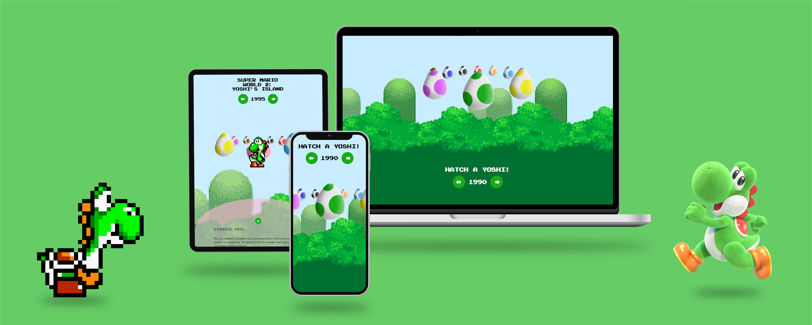

Yoshi's Eggcellent Timeline
Ontdek de iteraties van Yoshi's design door de jaren heen!
-
skills
ui design, html/css, javascript
-
periode
november 2022
-
opdrachtgever
Minor VID
Opdracht
Ontwerp een aantrekkelijke, informatieve en passende tijdlijn voor een inmiddels klassiek karakter/product. Denk na over de kenmerken van je karakter die het karakter uniek maken. Maak deze de basis van je tijdlijn.
 Bekijk Github repo
Bekijk Github repo
 Bekijk Website
Bekijk Website
Hatch je eigen Yoshi door op de eieren te klikken. Met behulp van je cursor, een lekkere appel, verleid je de Yoshi's om uit hun ei te breken! Het ei breekt open en onthuld meer informatie over de Yoshi waaronder het jaartal van release, game waarin dit model/sprite voorkomt en informatie over de karakteristieken en abilities van Yoshi in deze game.
Conceptschetsen
Aan de hand van mijn keuze voor Yoshi uit de Super Mario games, heb ik onderzocht wat kenmerkend is voor zijn karakter en uiterlijk, zodat ik een speels en geschikt concept kon vormen.
Schermontwerpen
Het ontwerp is responsive voor mobile, tablet en desktop. Met media queries zijn de belangrijkste onderdelen responsive gemaakt.
Tijdens dit project heb ik mijzelf uitgedaagd door mezelf te verdiepen in de volgende onderwerpen: Vormen en elementen maken in CSS, interactie met JS, 3-dimensionaliteit in CSS en Micro animaties en micro interacties, dit om mijn ontwerp interactiever en professioneel te maken.
Motion
In dit ontwerp zitten speelse en leuke animaties die de ervaring van het ontdekken van alle Yoshi's ondersteunen.

Easter egg
Ook heb ik een leuke easter egg verstopt, heb je hem gevonden?

Next Up
Beeldtaal: semiotiek en retorica
Onderzoek en toepassing van semiotiek en retorica